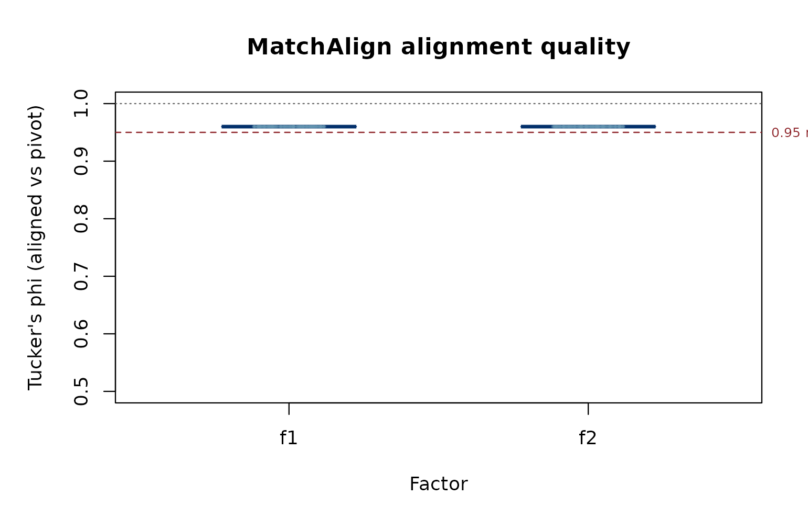
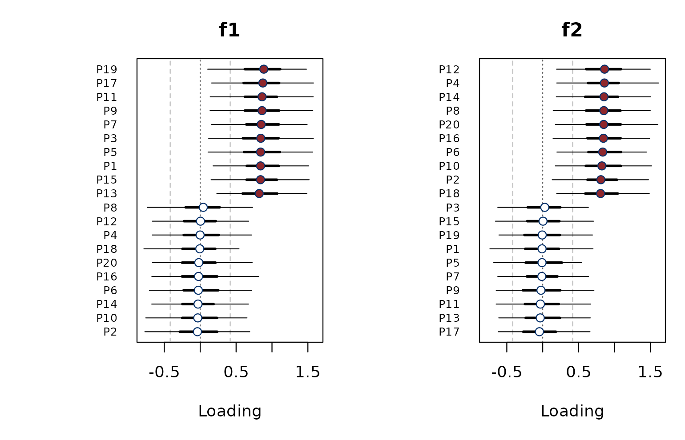
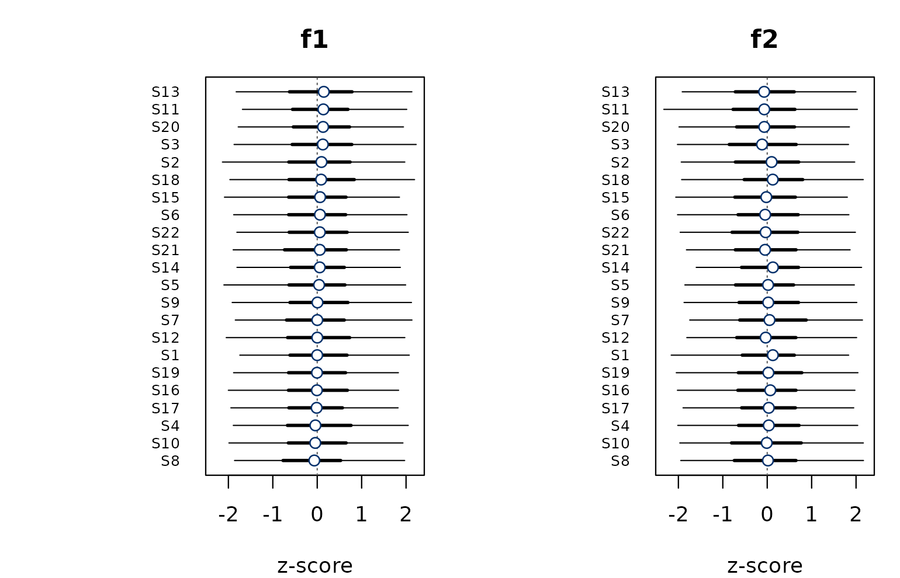
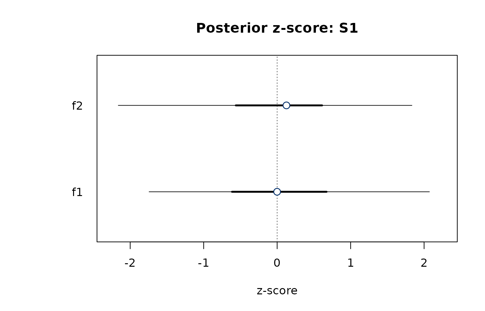
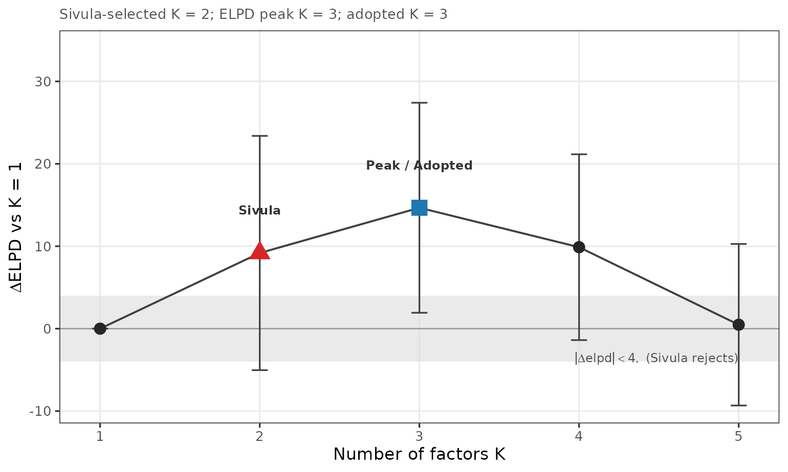
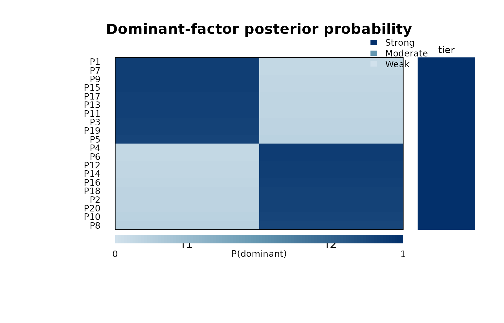
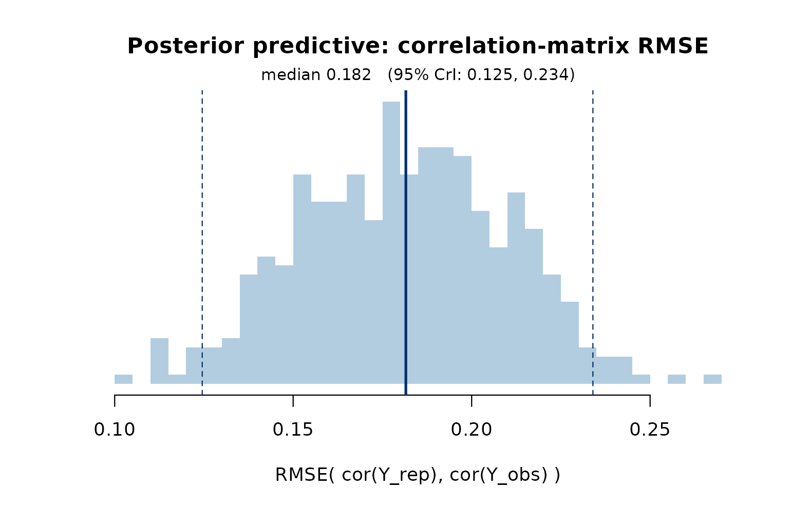

This vignette walks through one Q study end to end in bayesqm: import, fit, diagnose, interpret, select K, and export. The running example is a synthetic 33-participant, 42-statement Q-sort.
The Q-sort data
A Q study asks each participant to rank-order a set of statements
into a forced distribution. bayesqm represents that as a
J × N numeric matrix (statements as rows, participants as
columns) plus a vector of forced-distribution counts.
read_qsort() auto-detects the file format:
qdata <- read_qsort("mystudy.csv") # CSV / Excel / HTMLQ / FlashQ
qdata <- read_qsort("mystudy.DAT") # PQMethod
qdata <- read_qsort("mystudy.zip") # KADE projectThe example dataset:
sim <- generate_data(N = 33, J = 42, K = 3, seed = 1)
qdata <- qsort_data(sim$Y, distribution = sim$distribution)
qdata
#> Q-sort data
#> statements : 42 participants : 33
#> distribution: 2 3 4 5 7 7 5 4 3 2 (sum = 42 )
#> value range : [-5, 5]
#> source : manualFitting the model
fit_bayesian() samples the posterior of a low-rank
factor model with a Student-t likelihood (by default) and a hierarchical
normal prior on the loadings, then resolves rotational ambiguity with
the MatchAlign post-processing of Poworoznek et
al. (2025):
fit <- fit_bayesian(qdata, K = 3, chains = 4, iter = 2000,
warmup = 1000, seed = 1)
fit <- demo_fit(N = 33, J = 42, K = 3, seed = 1)
fit
#> Bayesian Q-methodology factor model
#> Call: fit_bayesian(Y, K = K)
#> Family: Student-t (nu = estimated)
#> Factors: K = 3
#> Data: N = 33 persons, J = 42 statements
#> Draws: 4 chains x 1000 post-warmup = 4000 total
#> Backend: demo
#> Fitted: 2026-05-11 20:22:57
#> Max Rhat: 1.010
#> Min ESS: bulk 820 / tail 950
#> Divergent: 0
#>
#> Factor loadings (posterior median [95% CI], first 10 of 33 persons):
#> f1 f2 f3
#> P1 0.82 [0.66, 0.97] -0.04 [-0.21, 0.12] 0.02 [-0.15, 0.19]
#> P2 -0.09 [-0.24, 0.07] 0.74 [0.58, 0.91] 0.13 [-0.03, 0.29]
#> P3 0.04 [-0.13, 0.19] -0.12 [-0.30, 0.04] 0.60 [0.44, 0.77]
#> P4 0.69 [0.53, 0.86] -0.03 [-0.20, 0.12] 0.08 [-0.06, 0.24]
#> P5 0.06 [-0.08, 0.21] 0.78 [0.63, 0.94] -0.04 [-0.19, 0.11]
#> P6 0.13 [-0.02, 0.32] -0.08 [-0.26, 0.08] 0.59 [0.42, 0.71]
#> P7 0.67 [0.50, 0.82] -0.04 [-0.19, 0.13] -0.15 [-0.32, 0.01]
#> P8 0.11 [-0.03, 0.25] 0.74 [0.59, 0.89] -0.00 [-0.16, 0.15]
#> P9 -0.01 [-0.15, 0.12] -0.10 [-0.25, 0.04] 0.75 [0.60, 0.90]
#> P10 0.68 [0.51, 0.83] -0.12 [-0.27, 0.04] 0.06 [-0.08, 0.22]
#> ... (23 more; see fit$loa_median / fit$ci_lower / fit$ci_upper)
#>
#> Hyperparameters:
#> parameter mean median sd lower upper
#> nu 20.0 20.1 3.818 12.41 26.89
#> sigma 0.5 0.5 0.083 0.34 0.67
#> tau 0.5 0.5 0.082 0.34 0.66
#>
#> Use summary() for factor characteristics, distinguishing/consensus tables, and LOO.summary(fit) adds factor characteristics, the PSIS-LOO
ELPD (when available), distinguishing-statement counts, and the
MatchAlign diagnostic.
Diagnostics
Convergence statistics are stored on fit$diagnostics.
The recommended thresholds are R-hat below 1.01, bulk and tail effective
sample sizes above 400, and zero divergent transitions (Vehtari et al.
2021):
fit$diagnostics
#> $rhat_max
#> [1] 1.01
#>
#> $ess_bulk
#> [1] 820
#>
#> $ess_tail
#> [1] 950
#>
#> $divergences
#> [1] 0plot_tucker() visualises the per-draw Tucker phi between
each aligned factor column and the MatchAlign pivot. Values near 1
indicate a stable alignment; bimodality signals residual
label-switching.
plot_tucker(fit)
MatchAlign alignment quality by factor.
Factor loadings
Each participant has a posterior distribution over their loading on
every factor. plot_loading_posterior() draws the loading
forest, with nested 50% and 95% credible-interval whiskers and the
classical Brown (1980) cut-off as a faint reference.
Filled points are participants with
P(factor k dominant) > 0.5.

Loadings with nested 50% and 95% credible intervals.
The same information as a tidy data frame:
head(compute_loadings(fit$Lambda_draws, prob = 0.95))
#> participant f1_loa f1_lower f1_upper f2_loa f2_lower
#> 1 P1 0.82218583 0.65967029 0.97347665 -0.04267266 -0.2145922
#> 2 P2 -0.08886156 -0.24309784 0.07209832 0.74522036 0.5791526
#> 3 P3 0.03940137 -0.12972350 0.19405389 -0.12287342 -0.2986770
#> 4 P4 0.69365900 0.53025182 0.85839822 -0.03571152 -0.1965369
#> 5 P5 0.05989579 -0.07856949 0.21054518 0.78202658 0.6258714
#> 6 P6 0.12982142 -0.02363006 0.31509987 -0.08730420 -0.2556340
#> f2_upper f3_loa f3_lower f3_upper
#> 1 0.12335192 0.01982447 -0.14521623 0.1878235
#> 2 0.91064671 0.13579980 -0.02821464 0.2948461
#> 3 0.03507329 0.60443673 0.44105818 0.7671924
#> 4 0.12328690 0.08182326 -0.06409235 0.2354870
#> 5 0.93757307 -0.03495072 -0.19214191 0.1134495
#> 6 0.07939546 0.58198954 0.41551318 0.7077884Factor z-scores
plot() produces a cross-panel z-score dotchart; rows
share an order (by factor 1’s posterior mean, configurable via
sort_by) so factors can be compared horizontally.
plot(fit)
Posterior z-scores across factors with 50% and 95% credible intervals.
For a single statement across factors,
plot_zscore_posterior() shows the per-factor view:
plot_zscore_posterior(fit, statement = 1)
Posterior z-score for a single statement across factors.
Choosing K
run_bayes() fits the model for each K in a range and
applies the peak-plus-Sivula protocol: the ELPD peak is
the automated choice and the Sivula parsimony rule (Sivula et al.
2025) is reported alongside as a diagnostic.
On real data:
run <- run_bayes(qdata, K_max = 4, seed = 1,
chains = 2, iter = 1500, warmup = 800)
run <- demo_run(K_max = 5, k_peak = 3, k_sivula = 1, case = "gap")
run
#> Bayesian Q-methodology: multi-K comparison
#> K range: 1..5
#> ELPD peak: K = 3 (automated adoption)
#> Sivula rule: K = 1 (parsimony diagnostic)
#> Case: gap (ELPD peak > Sivula (weak discrimination between adjacent models))
#>
#> LOO comparison:
#> K elpd se delta_elpd se_delta ratio
#> 1 -180.09 8.00
#> 2 -170.91 7.25 -9.18 3.00 3.06
#> 3 -165.42 6.50 -5.49 3.00 1.83
#> 4 -170.20 5.75 4.78 3.00 1.59
#> 5 -179.61 5.00 9.41 3.00 3.14
#>
#> Case 'gap': k_peak is adopted; Sivula is reported as a parsimony diagnostic only.
make_elpd_diff(run)
ΔELPD across K with the Sivula non-promotion band at |ΔELPD| < 4. Triangle marks the Sivula K, square marks the ELPD peak (the adopted K).
The ELPD peak is always the adopted K. The Sivula diagnostic is
reported alongside as a parsimony check. The run$case field
labels the relationship between the two: when Sivula lands on the same K
as the peak, the case is agree; when Sivula points to a
smaller K than the peak, the case is gap; when Sivula
exceeds the peak, the case is reversed (rare in
practice).
Distinguishing, consensus, and membership
bayesqm replaces the classical z-score test with a
direct posterior probability. For every statement and every factor pair,
P(|f_jk − f_jl| > δ) gives the probability that the two factors
separate that statement by at least δ. The default δ = 1 is on the
standardised factor-score scale.
plot_dist_cons(fit, delta = 1.0)Distinguishing-statement probability. Rows sorted so the most discriminating statements are at the top.
Participant-level membership is also probabilistic.
classify_membership() turns posterior dominance into a
Strong / Moderate / Weak tier:
head(classify_membership(fit$Lambda_draws))
#> participant dominant_factor dominant_label max_prob tier
#> 1 P1 1 f1 1 Strong
#> 2 P2 2 f2 1 Strong
#> 3 P3 3 f3 1 Strong
#> 4 P4 1 f1 1 Strong
#> 5 P5 2 f2 1 Strong
#> 6 P6 3 f3 1 Strong
make_dominant_panel(fit)
Blue tiles: posterior probability that each factor is dominant for a given participant (values printed in each cell). The right column shows the overall assignment verdict on an orange-red scale.
Posterior predictive check
plot_ppc() shows the posterior distribution of the RMSE
between cor(Y_rep) and cor(Y_obs). A
well-specified model puts most posterior mass at small RMSE.
plot_ppc(fit)
PPC on the by-person correlation matrix.
Reporting and exporting
save_bayesqm_plot() writes any plot to PDF, SVG, PNG,
TIFF, or JPEG at the chosen dimensions:
save_bayesqm_plot("fig_loadings.pdf", plot_loading_posterior(fit))
save_bayesqm_plot("fig_elpd.pdf", plot_elpd(run),
width = 3.5, height = 3)caption_bayesqm() returns a figure caption with model
configuration, sample sizes, interval probability, and convergence
diagnostics:
caption_bayesqm(fit)
#> [1] "Bayesian Q-methodology factor model (K = 3, N = 33, J = 42); fitted with a Student-t likelihood via demo (4 chains, 4,000 post-warmup draws); intervals shown at 95% posterior coverage; max Rhat = 1.010, min bulk ESS = 820, 0 divergent transitions. Fitted with the bayesqm R package."Standard R accessors work on the fit (coef,
fitted, residuals, sigma,
family, as.matrix), and
as.matrix(fit) returns a Stan-style draws matrix that
posterior and bayesplot consume natively.
Theming
Every plot reads its palette through bayesqm_colors().
Switch the scheme once and every subsequent base-R plot follows:
bayesqm_set_colors("teal") # "blue" (default), "red", "purple", "grey"
plot(fit)
bayesqm_set_colors("blue")Where next
-
?fit_bayesian: every prior and sampler option -
?run_bayes: peak-plus-Sivula thresholds -
?bayesqm-membership: the full set of membership summaries -
?rename_factors: relabelf1..fKwith substantive factor names -
ggplot2::autoplot(): ggplot2 / ggdist versions of every view above, whenggplot2andggdistare installed